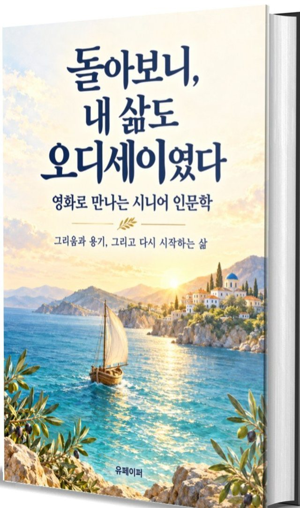
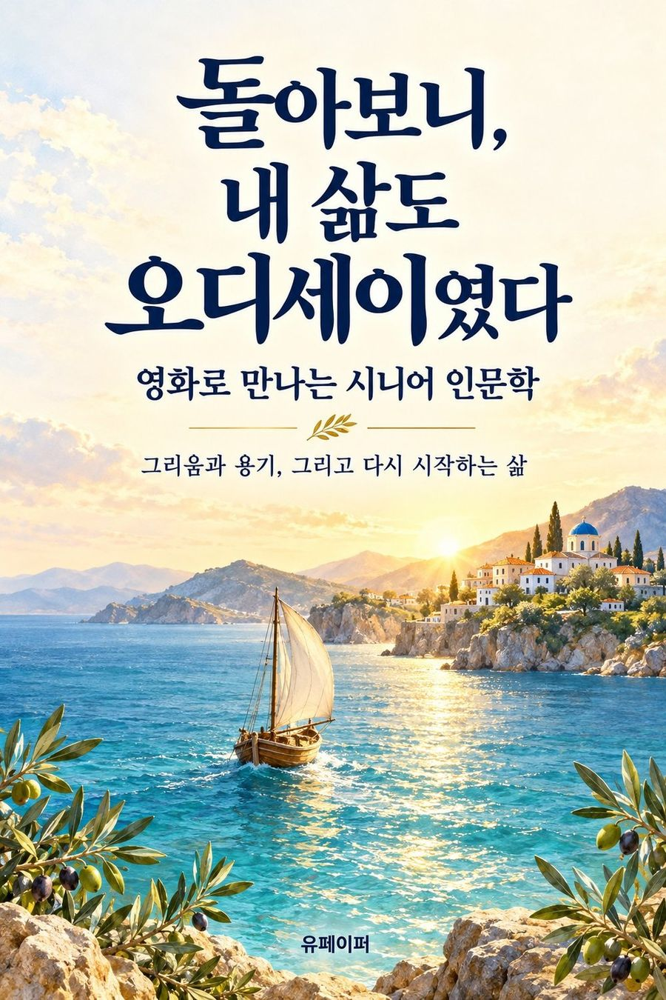
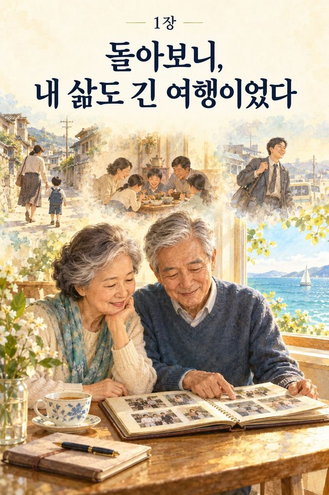
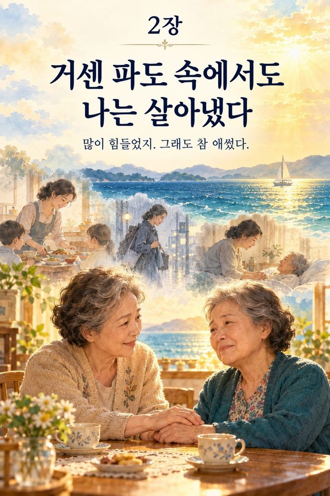
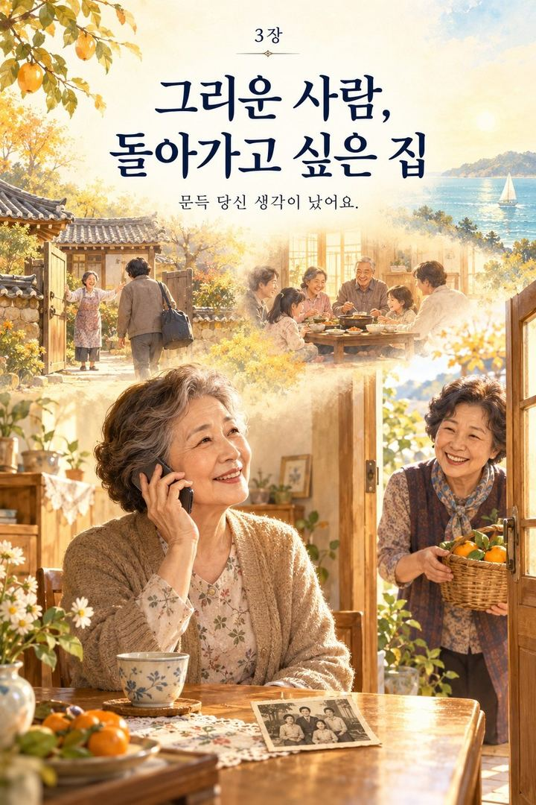
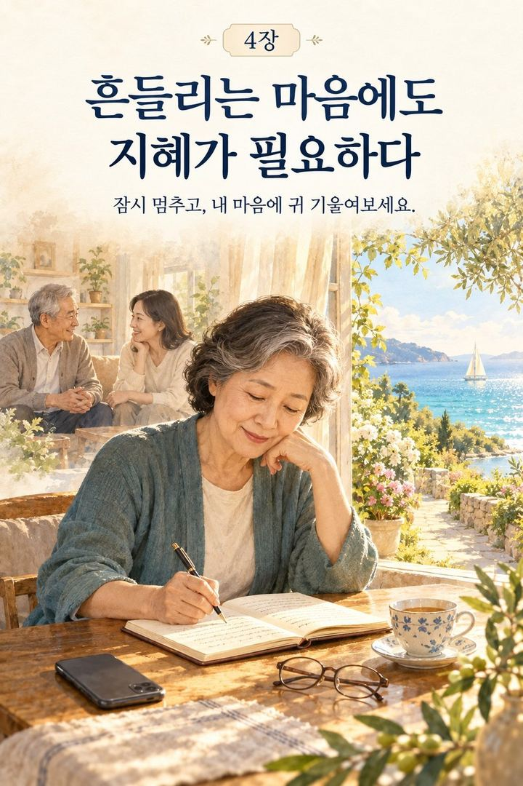
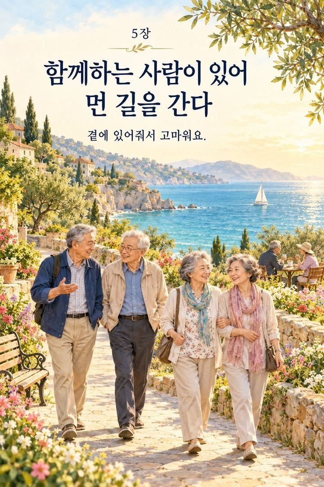
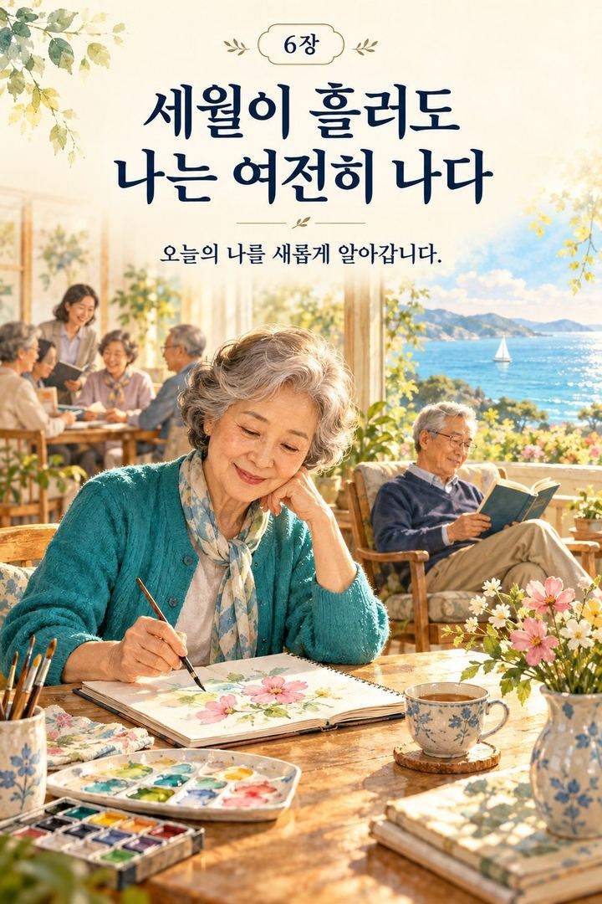
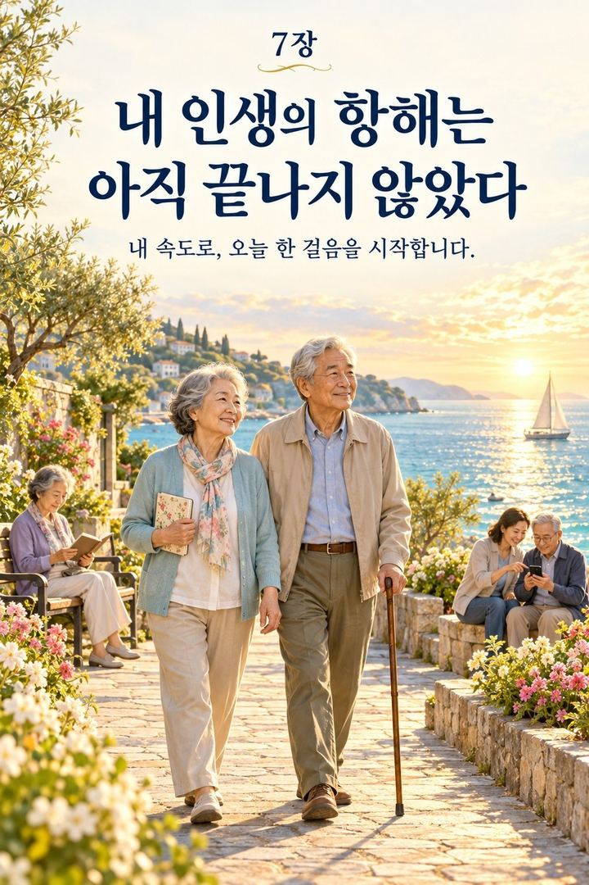

「돌아보니, 내 삶도 오디세이였다」
영화 인문학 특강
영화 장면과 질문으로 어르신과 강사가 함께 호흡하는 참여형 인문학 수업입니다. 하루의 단발 특강으로도, 7주 동안 이어지는 연계 과정으로도 진행합니다.
단발 특강 · 7주 연계 과정
시니어인문학연구소 · 소장 홍병식
영화로 만나는 시니어 인문학
그리움과 용기, 그리고 다시 시작하는 삶.
딱딱한 철학 용어 대신 영화 속 장면과 삶의 기억을 이어
7장의 인문학 특강을 어르신 곁으로 찾아갑니다.

유페이퍼

연구소 소개
노인복지관, 노인대학, 경로당, 평생학습관 등 어르신을 만나는 현장에서 강의를 하다 보면, 어르신 한 분 한 분의 삶이 그 자체로 한 편의 위대한 서사시라는 생각을 자주 하게 됩니다. 그리스 신화의 오디세우스가 수많은 파도와 시련을 건너 마침내 고향으로 돌아왔듯, 우리 어르신들도 젊은 날의 치열한 분투와 가족을 향한 헌신, 세월의 굴곡을 온몸으로 건너 오늘에 이르셨습니다.
시니어인문학연구소는 그 마음에 다가가기 위해 어려운 철학 용어 대신 친숙한 영화 속 장면과 삶의 기억을 연결합니다. 배우고 나누는 자리에서 웃고 울며 서로의 이야기를 들어 주는 것, 그 자리가 우리가 하는 인문학입니다.
대표 특강
영화라는 친근한 매개체와 따뜻한 스토리텔링, 어르신이 직접 참여하고 공감하는 대화가 어우러진 7장 구성의 특강입니다. 장을 눌러 각 장의 이야기를 만나 보세요.
장을 누르면 이야기가 바뀝니다. 옆으로 넘겨 7장까지 볼 수 있어요.

제1장
“앨범 속 바랜 사진 한 장이 긴 여행의 첫 페이지입니다.”
앨범 속 바랜 사진을 한 장씩 넘기다 보면, 까까머리 어린 시절의 골목길부터 가족과 둘러앉아 웃던 밥상, 첫 직장을 향해 설레며 나서던 청춘의 아침까지 주마등처럼 스쳐 지나갑니다. 오디세우스의 항해처럼 내가 걸어온 세월을 하나의 ‘긴 여행’으로 바라보며, 서로의 기억을 나누는 시간으로 문을 엽니다.
이 장의 마음 나의 첫 페이지 꺼내 보기
제2장
“많이 힘들었지. 그래도 참 애썼다.”
살다 보면 누구에게나 거센 비바람과 파도 같은 날들이 찾아옵니다. 자식들을 키워내느라, 아픈 가족을 돌보느라, 생계의 무게를 견디느라 정작 내 마음은 돌보지 못했던 날들도 있었을 것입니다. 그 모든 시간을 묵묵히 버텨온 나 자신의 손을 꼭 잡아주며, 잘 살아낸 스스로를 진심으로 토닥이고 위로하는 시간을 갖습니다.
이 장의 마음 스스로에게 건네는 위로
제3장
“문득 당신 생각이 났어요.”
나이가 들수록 문득 떠오르는 얼굴들이 있습니다. 고향 집 대문 앞에서 반겨주시던 어머니, 오래전 안부를 묻고 싶은 친구, 함께 세월을 건넌 가족의 모습입니다. 마음속에 남아 있는 그리운 사람과 돌아가고 싶은 집의 기억을 나누며, 세월이 흘러도 변치 않는 정서적 온기를 회복합니다.
이 장의 마음 그리움의 온기 되찾기
제4장
“잠시 멈추고, 내 마음에 귀 기울여보세요.”
나이가 든다고 해서 마음이 늘 단단하기만 한 것은 아닙니다. 몸의 변화나 주변 환경이 달라짐 앞에서 누구나 흔들리고 외로움을 느낍니다. 영화 속 지혜로운 선택들을 통해 감정을 다독이는 법을 살펴보고, 노트에 내 마음을 적어보며 나만의 평온한 기준을 세우는 시간을 가집니다.
이 장의 마음 나만의 평온한 기준 세우기
제5장
“곁에 있어줘서 고마워요.”
인생이라는 항해는 혼자 노를 저을 때보다 곁에 마음을 나눌 벗이 있을 때 훨씬 멀리, 그리고 즐겁게 나아갈 수 있습니다. 배우자, 친구, 이웃, 그리고 오늘 강의실에서 나란히 앉은 동료 어르신들과 서로 감사의 마음을 전하며 함께 걷는 기쁨을 나눕니다.
이 장의 마음 감사의 마음 전하기
제6장
“오늘의 나를 새롭게 알아갑니다.”
세월은 주름을 남기지만, 내 안의 호기심과 배움의 즐거움까지 앗아가지는 못합니다. 그림을 그리고, 책을 읽고, 새로운 취미에 도전하는 모습 속에서 ‘누군가의 부모’를 넘어 온전한 ‘나 자신’을 다시 만납니다. 나이와 상관없이 빛나는 자기다움의 가치를 함께 발견합니다.
이 장의 마음 빛나는 자기다움 발견
제7장
“내 속도로, 오늘 한 걸음을 시작합니다.”
인생의 후반전은 저무는 시간이 아니라, 비로소 내 속도로 걸을 수 있는 가장 자유롭고 깊은 시간입니다. 앞으로 가보고 싶은 곳, 해보고 싶은 작은 도전을 함께 그려보며 내 인생의 두 번째 항해를 힘차게 응원하는 것으로 특강을 마무리합니다.
이 장의 마음 두 번째 항해 응원하기프로그램
회차와 대상 인원, 기관의 성격에 맞추어 단발 특강부터 7주 연계 과정까지 유연하게 구성해 드립니다.
영화 장면과 질문으로 어르신과 강사가 함께 호흡하는 참여형 인문학 수업입니다. 하루의 단발 특강으로도, 7주 동안 이어지는 연계 과정으로도 진행합니다.
단발 특강 · 7주 연계 과정
시니어 인문학을 현장에서 펼칠 강사를 양성하는 과정입니다. 1기 교육을 마치고, 어르신 곁에서 이야기를 나눌 지도사를 길러내고 있습니다.
과정 일정·지원 방법은 전화 문의
기관의 성격과 대상 인원에 맞춘 참여형 인문학 수업을 준비합니다. 어르신이 자연스럽게 자기 이야기를 꺼내 놓을 수 있도록 자리를 설계합니다.
일정과 인원을 알려 주시면 구성해 드립니다
시니어인문학연구소장
소장 인사
어르신들의 지나온 삶에 존경을,
오늘의 삶에 위로를,
내일의 삶에 용기를 전하고 싶습니다.
— 시니어인문학연구소장 홍병식
노인복지관·노인대학·경로당·평생학습관 등 어르신을 만나는 현장에서 강의해 왔습니다. 인문학 특강이 필요한 기관이라면 언제든 편하게 문의해 주세요.
자주 묻는 질문
더 궁금한 점은 전화로 편하게 물어보셔도 좋습니다.
강의 문의
기관명과 희망 일시, 대상 인원을 알려 주시면 회차와 구성에 맞추어 안내드립니다. 전화 한 통이면 충분합니다.
010-3287-1007아래 버튼을 누르면 문의 내용이 복사됩니다. 문자나 카카오톡에 붙여 넣고 빈칸만 채워 보내 주세요.